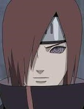

Deidara
Deidara was an S-rank missing-ninja from Iwagakure. During his time in the village, he was a
member of the Explosion Corps. After defecting from the village, he was forced into Akatsuki
and was its youngest member. There, Deidara was partnered with Sasori until the latter's
death, and later with Tobi before his own death.
Hidan
Hidan is an S-rank missing-nin who defected from Yugakure and later joined the Akatsuki.
There, he was partnered with Kakuzu, despite the two's somewhat mutual dislike of each
other. He was also the second newest member of Akatsuki at the time of Tobi's introduction.
Hidan has killed Asuma Sarutobi in one of their missions.
Itachi Uchiha
Shinobi who took part in war at the age of 4. After 7 years he became the leader of group
anbu (secret group of varriors of each village). When he recognized that his clan was
planning the insurrection he decided to kill them. After achieving the status of betrayer,
he joined the Akatsuki (group of criminals) in order to inform Hokage.
Juzo Biwa
Jūzō Biwa was a jōnin from Kirigakure and a member of the Seven Ninja Swordsmen of the Mist.
After 3rd Shinobi World War, Seven Swordsmen of the MIst met Mayto Day who killed 4 of them.
In the anime, Jūzō deserted his village and became a member of Akatsuki, where he was
partnered with Itachi Uchiha. Lately was killed by 4th Mizukage.
Kakuzu
Kakuzu was an S-rank missing-ninja from Takigakure and a member of Akatsuki who was
partnered with Hidan. due to the fact that, in differing senses, they could not die. Althogh
he was half immortal (he had 4 hearts), Naruto improved "Rasengan" by combining wind style
technics with it and killed him.
Kisame Hoshigake
Kisame Hoshigaki, feared as the Monster of the Hidden Mist , was a shinobi of Kirigakure's
Hoshigaki Clan. After joining the Seven Ninja Swordsmen of the Mist, he became an S-rank
missing-ninja and was partnered with Itachi Uchiha when the latter joined Akatsuki.
Hoshigake Kisame was carrier of sword called Samihada.
Konan
Konan was a kunoichi from Amegakure and a founding member of the original
Akatsuki. After Yahiko's death, she was partnered with Nagato, who had since taken control
of Akatsuki, and was the only member to call him by his name. After Nagato's death, Konan
defected from Akatsuki and became the village head of Amegakure.
Yahiko
Yahiko was a shinobi from Amegakure. Alongside his fellow war orphans, Nagato and Konan, he
founded and led the Akatsuki in an attempt to bring peace. Following Yahiko's death, Nagato
would turn his body into the Deva Path of his Six Paths of Pain, which he used as the
continued public image of Akatsuki's leadership.
Nagato

Nagato was a shinobi of Amegakure and descendant of the Uzumaki clan. Forming Akatsuki
alongside his friends Yahiko and Konan, Nagato dreamed of bringing peace to the violent
shinobi world. However, following Yahiko's death, Nagato, along with Konan, began leading a
new Akatsuki — one that would force the world into peace.
Pain

Pain is shinobi of Amegakure reknowned as Yahiko. After Yahiko's death his friends
resurrected him with the Outer path of Nagato. By this way Nagato formed a group under his
control which he called "Siz Path of Pain". The group consisted of 6 resurrected individuals
and one of them was Yahiko who lead them, as well as Akatsuki.
Orochimaru
Orochimaru is one of Konohagakure's legendary Sannin. Orochimaru seeks immortality so that
he might live all of the lives necessary to learn all of the world's secrets. After being
caught for unethical experiments on his fellow citizens for the sake of this immortality,
Orochimaru defected from Konoha to achieve the revange.
Sasori
Sasori, renowned as Sasori of the Red Sand, was an S-rank missing-ninja from Sunagakure's
Puppet Brigade and a member of Akatsuki, where he was partnered with Orochimaru and later
Deidara. When he was young his parent were killed by Hatake Sakumo and he left alone with
his granny and learned all about puppetry.
Tobi
Actually Tobi was fake name of Obito Uchiha was a member of Konohagakure's Uchiha clan. He
was believed to have died during the Third Shinobi World War, his only surviving legacy
being the Sharingan he gave to his teammate, Kakashi Hatake. But in real he was saved by
Madara Uchiha and lately inherited his plan to create an ideal world.
Zetsu
White Zetsu was half of the Akatsuki member Zetsu. He was one of the first victims of Kaguya
Ōtsutsuki's Infinite Tsukuyomi, infused with the DNA of Hashirama Senju by Madara Uchiha.
While Black Zetsu is the physical manifestation of Kaguya Ōtsutsuki's will. Having been
created to secure its creator's revival.
You also may be interested in...
Well-known clans